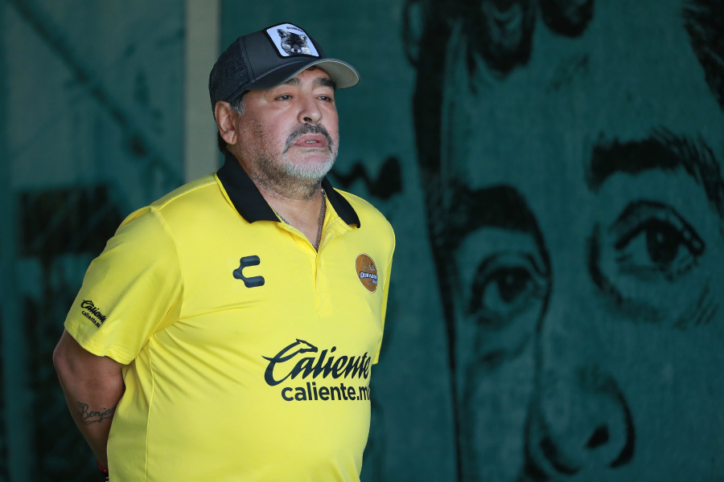

How dangerous does heart failure kill Maradona?

Autopsy results showed that Diego Maradona died of acute pulmonary edema due to chronic heart failure. This is a dangerous disease, the heart cannot pump blood enough to feed the body. The information was released from Argentina's Ministry of Justice, at the time of the Maradona autopsy on November 25, according to CNN. Dr. Nguyen Dang Khiem, Head of Emergency Department, Friendship Hospital, said that Maradona may have had heart failure for a long time, now the disease has a terminal stage. With this pathology, patients should avoid exertion, exercise sensibly, take enough medicine, breathe oxygen, rest. "From the smallest things such as brushing teeth and personal hygiene, there is also a need for support because the body is not strong enough", Dr. Khiem said. Without proper rest, acute heart failure occurs. Meanwhile, the heart does not work effectively, causing increased venous pressure, pushing more fluid into the lungs, causing pulmonary edema. Patient has difficulty breathing and then dies. Before that, Maradona had diabetes, increased blood pressure as a result of diet and activities in previous years. These are favorable factors that make heart failure worse.
At the third level, the patient is quite limited in physical activities and daily activities. When at rest, symptoms are relieved, but when exercising strenuously it is easy to have difficulty breathing, fatigue, palpitations. Up to level 4, the disease progresses, the patient who performs any physical activity feels uncomfortable, has a lot of affected daily activities, difficulty breathing appears even at rest, the patient can only do get the light work. Dr Thuong said that heart failure cannot be cured, the treatment helps control and alleviate symptoms, prolong life and maximize the quality of life of the patient. The patient should absolutely adhere to the treatment, take the right medicine, the right dose, the right time, not voluntarily reduce the dose or stop the drug even though there are no symptoms. In case the patient experiences side effects, it is necessary to immediately notify the treating doctor to reduce the dose or switch to another more suitable type. Lifestyle is very important in the treatment and prevention of heart failure. Patients should exercise lightly, avoid overwork, do not smoke, do not drink alcohol. People with heart failure need to avoid anxiety, stress, and maintain a moderate weight.